AICAD · drawings to 3D models
AICAD turns engineering drawings - single parts, machines, plant structures and drawing sets of many sheets - or a written description into parametric 3D solids, and exports them as STEP and as beam and shell models for structural analysis. A vision-language model reads the drawing on the PC's own GPU, the OpenCASCADE kernel builds the solid; nothing leaves the PC.
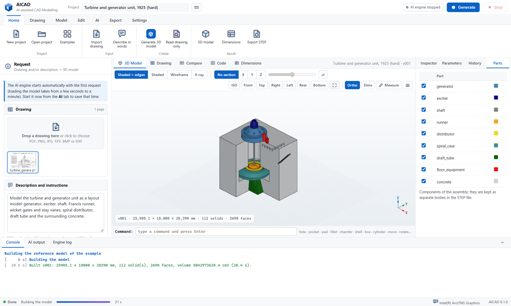
How a drawing becomes a model
The AI reads and writes; the program measures and checks. Every size used for the model is listed with its source - written on the drawing, measured by ratio on the sheet, stated by the user, or assumed.
Read
PDF (vector or scanned), PNG, JPEG, TIFF up to 280 megapixels, DXF. Views, dimensions, labels and scale notes are read; large views zoomed from the original in tiles; feet-inches and metric.
Measure
View boxes snapped to the linework, graphic scale bars measured by image analysis (feet and metre bars must agree), missing sizes measured by ratio, labels placed in millimetres.
Model
A CadQuery script with a parameter block per part or component, built on the OpenCASCADE kernel, corrected on errors, checked against its planned place and against hidden-line views of the drawing.
Export
STEP (AP214 / AP203 / AP242) assemblies with named, coloured parts; STL, glTF, BREP, a 2D DXF drawing, and a beam and shell analysis model.
Machines and plants
Several sheets are surveyed, every view read, the object planned as components in one coordinate system - legend entries placed at their callouts - and every component modelled and corrected on its own.
Building blocks for large structures
Steel members and frames from node lists (HEB, IPE, UPN, W shapes, pipes, hollow sections), stairs, ladders, grating, pipes, flanges, vessels, spiral casings, transitions, blade rows.
One package, no internet
Python runtime, all packages and the llama.cpp engines (CUDA, Vulkan, CPU) in one zip; the AI model is copied once. No administrator rights, no drawing leaves the PC.
From drawing to model
Real drawings in the public domain - Historic American Engineering Record sheets and US patents - and the models made from them.
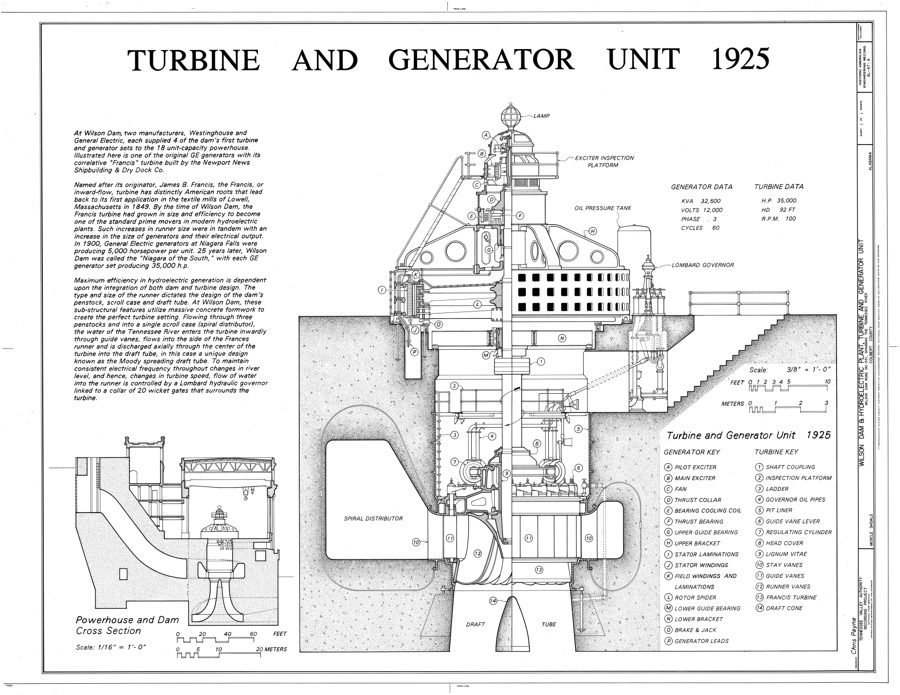
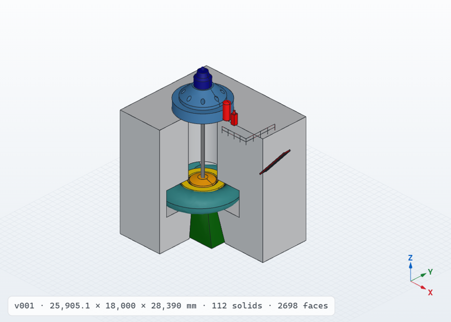
Turbine and generator unit, 1925: a half section without a single dimension; sizes from the measured scale bars. Layout model with the modelling library: 9 components, 112 solids.
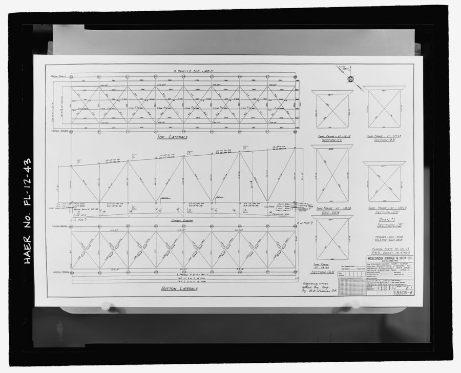
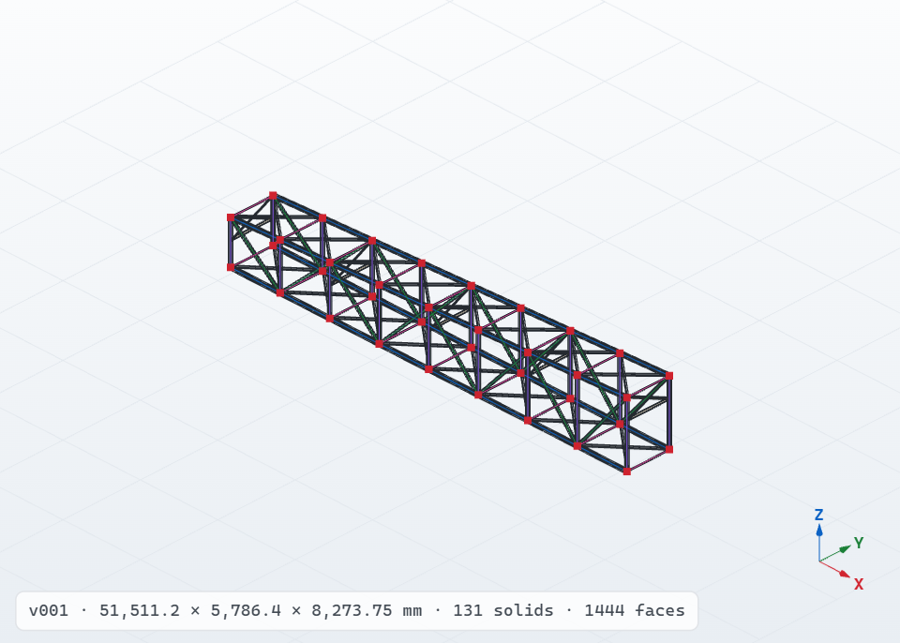
Steel deck truss, 1934: a photographed erection plan in feet and inches; 131 members, shown with the beam model derived from them (131 beams, 36 member ends joined).
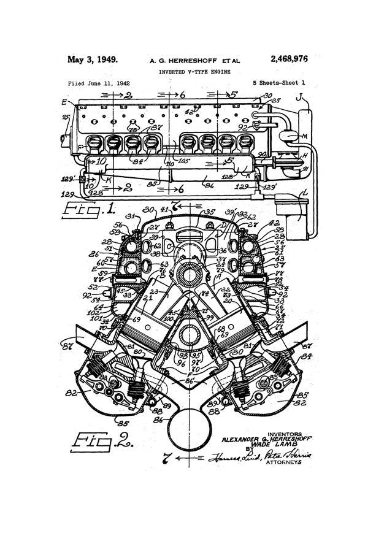
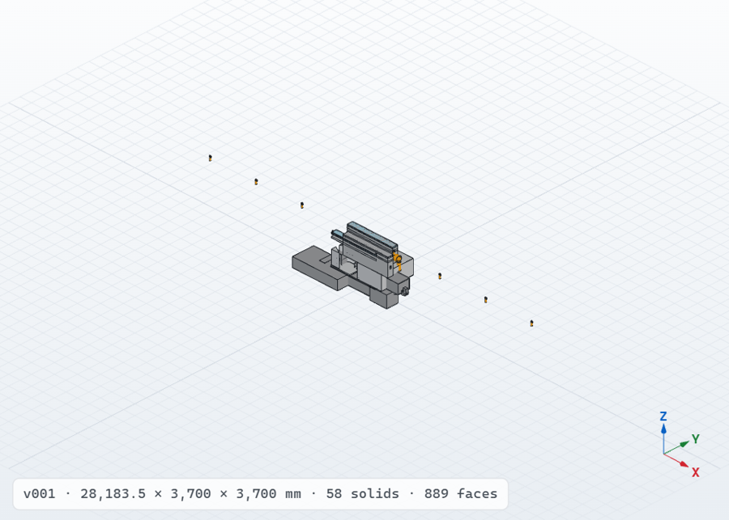
Inverted V-16 engine, five sheets (US patent 2,468,976), modelled by the AI from all five sheets: 11 of 11 components. Made with the compact test model on a laptop CPU; some components came out at the wrong size or orientation - see Tests.
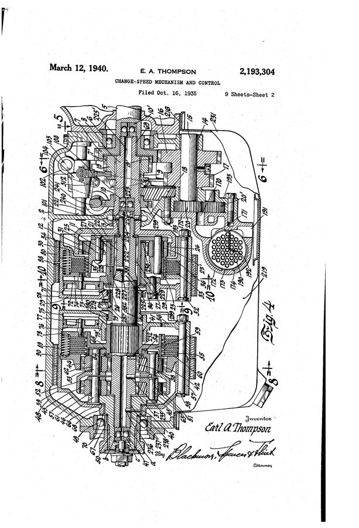
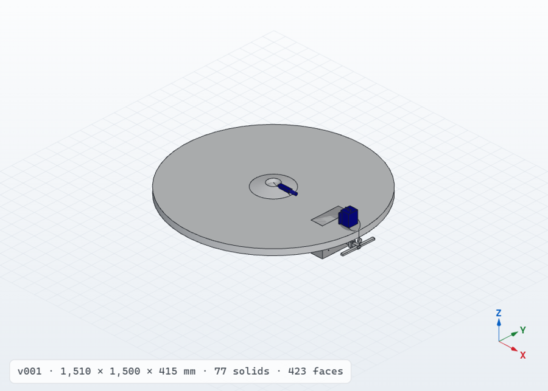
Automatic transmission, three sheets (US patent 2,193,304), modelled by the AI: 10 of 10 components including a planetary gear set of 39 solids (compact test model, the case lies flat).
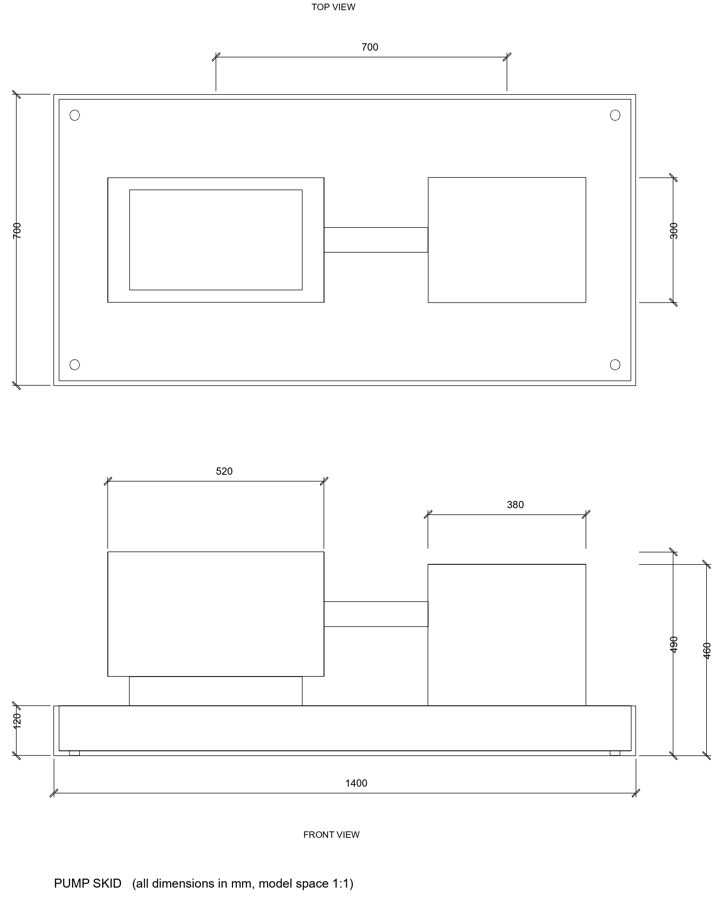
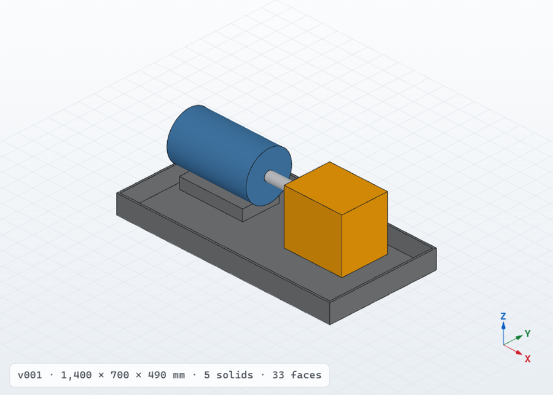
Pump skid from DXF: the dimension entities give the exact scale; five-part assembly.
CAD editing
The generated model is finished by hand with a command line and clicks in the 3D view. Every command becomes a parametric feature in a history - edited, suppressed, deleted, undone - and the model is rebuilt without the AI in about a second.
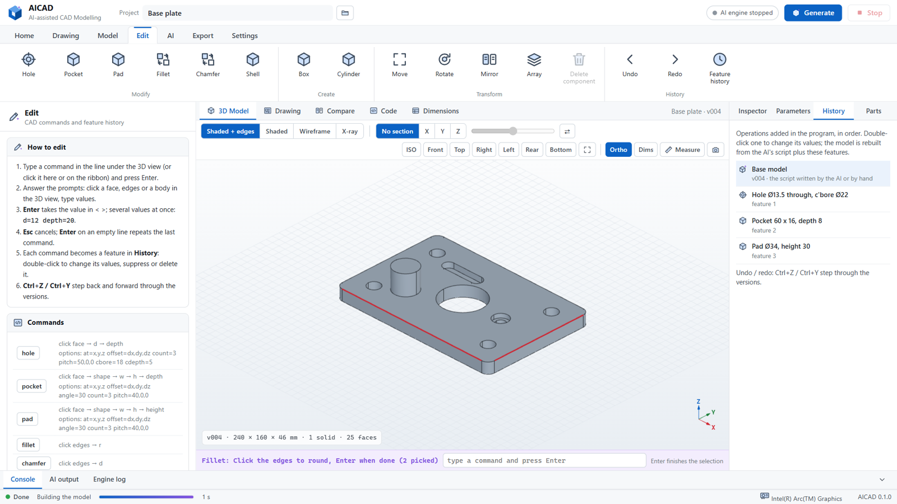
| Command | Picks | Values |
|---|---|---|
hole | face | diameter, depth; counterbore, count and pitch |
pocket, pad | face | rectangle, circle or slot; size; depth or height |
fillet, chamfer | edges | radius or size |
shell | face to open | wall thickness |
box, cylinder | face it stands on | sizes; add, cut or new body |
move, rotate, mirror, array, delete | body or component | displacement, axis and angle, plane, copies and step |
Enter takes the default, key=value gives several values at once,
Tab completes a command, Esc cancels, Ctrl+Z / Ctrl+Y undo and redo.
Analysis model: beams and shells
Structures of pipes and rolled sections, frames, platforms and vessels are analysed with beam and shell elements. AICAD derives that model from the solids, the way an analyst idealises a structure by hand.
What becomes what
- straight members and pipe runs → beams on the centre line; rod, pipe, rectangle, box and I sections recognised, area, second moments and torsion constant for any section
- thin walls (plates, vessel shells, dished heads, ducts) → shells on the mid-surface with the measured thickness
- member ends joined to the members they meet; beam ends on a mid-surface share the shell's nodes
- everything else stays a solid
Output
STEP with centre lines, mid-surfaces and remaining solids; an input deck in the CalculiX keyword format (B31 beams, S3 shells, sections, steel); a section table with length, area, moments, thickness and mass.
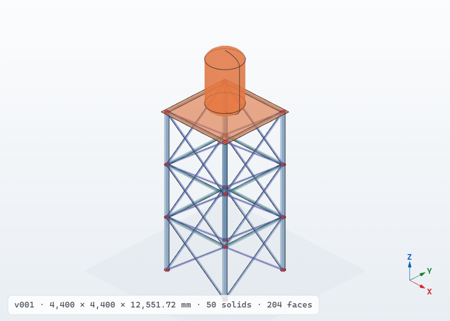
AI models
Open-weight vision-language models by the Qwen team (Apache-2.0) in GGUF form, run by llama.cpp with CUDA 12.4. The model is chosen from the graphics memory of the PC.
| Graphics card | Model | Size | On the release |
|---|---|---|---|
| 48 GB (RTX 6000 Ada / A6000 Ada) | Qwen3.6-27B, Q6_K | 23.5 GB | 13 parts |
| 24 GB (RTX 4090) | Qwen3.6-27B, Q4_K_M | 17.7 GB | 10 parts |
| none (trial) | Qwen3.5-4B, Q4_K_M | 3.4 GB | 2 parts |
| other | Qwen3.6-35B-A3B (Q4_K_M, IQ2_XXS), Qwen3.5-9B | 6.6 - 23 GB | from Hugging Face |
Install
Download once on any PC with internet, copy to the working PC. No compression program and no administrator rights are needed.
Download
From the release: the offline package, every part of the model for your graphics card, and SHA256SUMS.txt.
Unpack
Extract the offline package to C:\AICAD, then every model part to the same folder - or put the
parts next to 3_GET_AI_MODEL.bat and choose 20, which checks and unpacks them.
Install
Run 1_INSTALL_OFFLINE.bat: the Python runtime and packages are unpacked and a self-test runs.
Start
Run 2_RUN_AICAD.bat: AICAD opens in the browser at http://127.0.0.1:8100.
The complete installation, step by step with troubleshooting: README · Korean guide.
Tests
A self-test of 20 checks (kernel, library, CAD features, analysis model, import and export) passes. The complete AI pipeline was also run on real drawing sets with the compact test model (Qwen3.6-35B-A3B, 2-bit, on a laptop CPU without a GPU) - a deliberately weak setting.
| Drawing set | Read | Modelled | Time (CPU) |
|---|---|---|---|
| Turbine and generator unit, 1 sheet | 2 views, both scale bars, 69 labels; 12 components in the drawn order | 9 of 12 | 2 h 20 min |
| Inverted V-16 engine, 5 sheets | 11 views on 5 sheets; 11 components | 11 of 11 | 2 h 25 min |
| Automatic transmission, 3 sheets | 8 views on 3 sheets; 10 components | 10 of 10 | 2 h |
The drawing sets were read reliably and every run ended in a STEP assembly; the small model got several components wrong in size or orientation. The intended Qwen3.6-27B on a 24 or 48 GB GPU has not yet been measured on these sets.